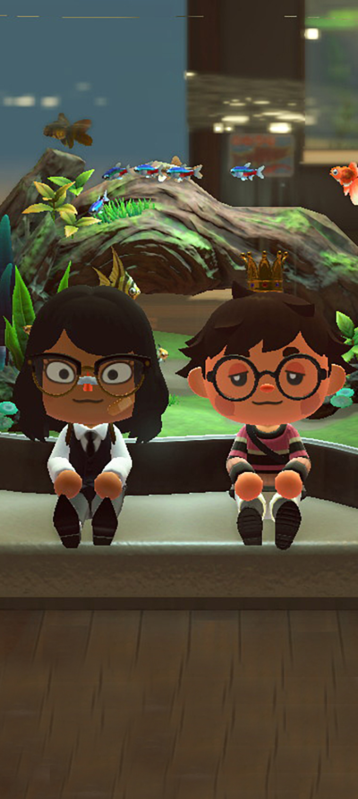
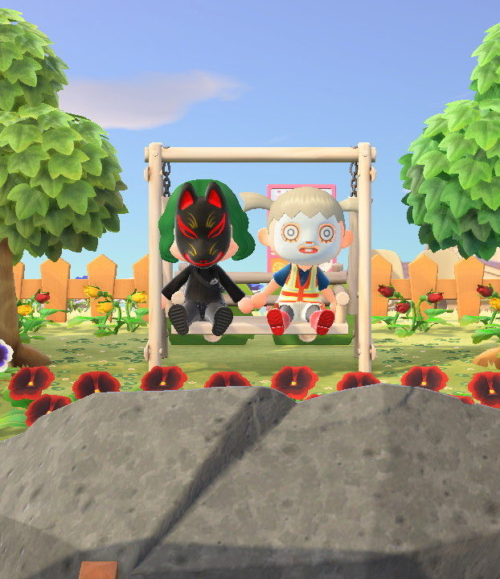
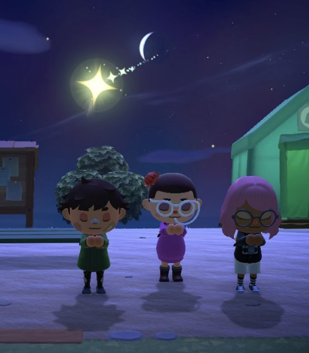

Activities
Escape to a deserted island and create your own paradise as you explore, create, and customize in the Animal Crossing: New Horizons game. Your island getaway has a wealth of natural resources that can be used to craft everything from tools to creature comforts. You can hunt down insects at the crack of dawn, decorate your paradise throughout the day, or enjoy sunset on the beach while fishing in the ocean. The time of day and season match real life, so each day on your island is a chance to check in and find new surprises all year round.


